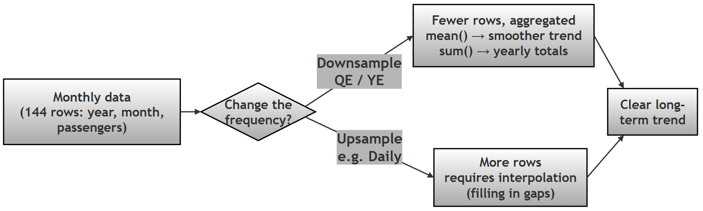

Chapter 12 (Supplement): Time Series Basics in Pandas¶
Working with Dates, Datetime Indexes, and Resampling¶
GitHub source: 95-ch12-time-series.md
Introduction — What This Chapter Contains and Why It Matters¶
Most real-world data changes over time — sales, temperature, website visitors, airline passengers. Data that is recorded in time order is called a time series (a sequence of data points indexed by time). Python's Pandas library has special tools for time series, and this chapter introduces the three most important ones:
- Creating datetimes — a
yearcolumn and amonthcolumn into one proper date - The DatetimeIndex — using dates as the row index so Pandas "understands" your data is time-based
- Resampling — changing the frequency of the data (monthly → quarterly → yearly) to reveal hidden trends
In this chapter you will learn:
| Skill | Why it matters |
|---|---|
pd.to_datetime() with structured input |
The safest way to build dates from separate columns |
df.set_index() with dates |
Unlocks slicing like df.loc['1950':'1959'] |
df.index.year, .quarter, .month |
Extract time features for grouping |
df.resample() |
Smooth noisy data into meaningful trends |
Note on technical terms: Words in italics are briefly explained where they appear. For deeper study, see the official guides: Time series / date functionality and Resampling.
Research Topic: Temporal Analysis of Airline Passenger Traffic¶
Research Question: How can raw multi-column temporal data be converted into a Datetime Index to facilitate analysis of seasonal fluctuations and long-term growth trends?
Project Scenario: The "Airline Passenger Traffic" dataset (flights) provides monthly counts of airline passengers from 1949 to 1960. While the dataset contains time information, it is currently split across two distinct columns: year (Integer) and month (String). To perform effective time series analysis, one must first engineer a unified datetime object. The objective is to:
- Construct a single Datetime Index from the separate year and month columns.
- Slice the data to isolate specific eras (e.g., the 1950s).
- Resample the data to convert noisy monthly data into smoothed quarterly and yearly averages, allowing for a clearer analysis of long-term trends.
Task: Using the Seaborn flights dataset, write a Python script to:
- Load the data and inspect its structure.
- Create a function or logic to combine the
yearandmonthcolumns into a singledatetimecolumn. - Set this new column as the DataFrame Index.
- Resample the data to calculate the Quarterly Average and Yearly Total number of passengers.
- Print the resampled data to compare the volatility of monthly data versus the trend in yearly data.
Follow-up sub-questions (for practice):
- (a) Why is the
dayset to1inpd.to_datetime(dict(year=..., month=..., day=1))? What would happen if you left it out? - (b) The
flightsdataset has 144 rows. Verify: 12 years × 12 months = 144. After resampling to yearly, how many rows remain, and why? - (c) What is the difference between downsampling (monthly → yearly) and upsampling (monthly → daily)? Which one needs aggregation and which needs interpolation?
- (d) Why does
resample()fail afterdf.reset_index()? What does the error message tell you? - (e) If you wanted average passengers per year instead of total, which aggregation function would you change, and how would the trend interpretation differ?
1. Conceptual Deep Dive¶
The Challenge of Multi-Column Dates¶
Real-world datasets often split dates. The flights dataset has year: 1949 and month: 'January'. Pandas cannot perform time-slicing or resampling until these are merged into a single datetime64 object (Pandas' internal date-time data type, storing a precise point in time) representing a specific point in time (e.g., 1949-01-01).
Resampling Logic¶
Resampling is the process of changing the frequency of time-series observations.
- Upsampling: Increasing frequency (e.g., Monthly → Daily). Requires interpolation (guessing in-between values).
- Downsampling: Decreasing frequency (e.g., Monthly → Yearly). Requires aggregation (Sum, Mean, Max).

Table of Resampling Offsets for Flights Data
| Alias | Description | Logical Output for Flights |
|---|---|---|
ME |
Month End | Original data (already monthly). |
QE |
Quarter End | Smoother trend (3-month averages). |
YE / A |
Year End | Shows total passengers per year (Annual growth). |
MS |
Month Start | Shifts index to 1st of month (purely for formatting). |
Deprecation note: In older tutorials you will see
'M','Q','Y','A'. Recent pandas versions replaced these with'ME','QE','YE'— the old codes still work but print aFutureWarning. See Offset aliases in the pandas docs.
Script Implementing the Research Problem / Project¶
Script implementing the research problem / Project
"""
PROJECT: Time Series Basics in Pandas
DATASET: Flights Dataset (Seaborn)
OBJECTIVE:
1. Create datetime from separate columns (robust method)
2. Extract time components
3. Set datetime index
4. Perform time-based slicing
5. Apply resampling
APPROACH USED:
- Structured datetime creation using dictionary (NO string parsing)
- This is the most reliable and scalable method
"""
# ==========================================================
# STEP 0: IMPORT LIBRARIES
# ==========================================================
print("\nSTEP 0: IMPORT LIBRARIES")
import pandas as pd # Step 0: pandas for data handling
import seaborn as sns # Step 0: seaborn for loading the built-in 'flights' dataset
# ==========================================================
# STEP 1: LOAD AND INSPECT DATA
# ==========================================================
print("\nSTEP 1: LOAD DATASET")
# Step 1: Load the flights dataset (monthly airline passengers 1949-1960)
df = sns.load_dataset('flights')
# ----------------------------------------------------------
# STEP 1.1: PREVIEW DATA
# ----------------------------------------------------------
# Step 1.1: Preview the first rows to confirm the data loaded correctly
print("\nFirst 5 rows:")
print(df.head())
# OUTPUT HINT:
# Columns → year (int), month (category), passengers (int)
# ----------------------------------------------------------
# STEP 1.2: CHECK STRUCTURE
# ----------------------------------------------------------
# Step 1.2: Check data types and shape — 'month' is a category dtype,
# which is why we cannot parse it as a date string directly
print("\nData Types:")
print(df.dtypes)
# OUTPUT HINT:
# year → int64
# month → category
# passengers → int64
print("\nShape:", df.shape)
# OUTPUT HINT:
# (144, 3)
# ==========================================================
# STEP 2: CREATE DATETIME COLUMN (ROBUST METHOD)
# ==========================================================
print("\nSTEP 2: CREATE DATETIME COLUMN (ROBUST METHOD)")
# ----------------------------------------------------------
# STEP 2.1: MAP MONTH NAMES TO NUMBERS
# ----------------------------------------------------------
# We create a mapping dictionary to convert month names to their corresponding numeric values.
month_map = {
'Jan': 1, 'Feb': 2, 'Mar': 3, 'Apr': 4,
'May': 5, 'Jun': 6, 'Jul': 7, 'Aug': 8,
'Sep': 9, 'Oct': 10, 'Nov': 11, 'Dec': 12
}
# We add a new column 'month_num' to the DataFrame by mapping the 'month' column using the month_map dictionary.
df['month_num'] = df['month'].map(month_map)
print("\nMonth Mapping Preview:")
print(df[['month', 'month_num']].head())
# OUTPUT HINT:
# Jan → 1, Feb → 2, ...
# ----------------------------------------------------------
# STEP 2.2: CREATE DATETIME USING STRUCTURED INPUT
# ----------------------------------------------------------
# We create a new 'date' column by combining the 'year' and 'month_num' columns into a proper datetime format.
# We set the day to 1 for all entries since we only have year and month information.
df['date'] = pd.to_datetime(
dict(year=df['year'], month=df['month_num'], day=1)
)
print("\nPreview with 'date' column:")
print(df.head(3))
# OUTPUT HINT:
# date → 1949-01-01, 1949-02-01, ...
# ERROR EXAMPLE:
# pd.to_datetime(df['month']) # Fails because month alone is not a complete date
# → Not a complete date
# ==========================================================
# STEP 3: SET DATETIME INDEX
# ==========================================================
print("\nSTEP 3: SET DATETIME INDEX")
# ----------------------------------------------------------
# STEP 3.1: SET INDEX
# ----------------------------------------------------------
# Setting the datetime column as the index allows us to easily perform time-based slicing and resampling
# in later phases.
# We will drop the original 'year' and 'month' columns after setting the index, as they are now redundant.
df.set_index('date', inplace=True)
# ----------------------------------------------------------
# STEP 3.2: DROP REDUNDANT COLUMNS
# ----------------------------------------------------------
# We use inplace=True to modify the DataFrame directly without needing to assign it back to df.
# We drop 'year', 'month', and 'month_num' because we have already combined them into the
# 'date' column, which is now our index.
df.drop(columns=['year', 'month', 'month_num'], inplace=True)
print("\nData after setting index:")
print(df.head())
# OUTPUT HINT:
# Index → date (datetime)
# Columns → passengers
print("\nShape:", df.shape)
# OUTPUT HINT:
# (144, 1) → only 'passengers' column remains
# ==========================================================
# STEP 4: EXTRACT TIME COMPONENTS
# ==========================================================
print("\nSTEP 4: EXTRACT TIME COMPONENTS")
# ----------------------------------------------------------
# STEP 4.1: EXTRACT COMPONENTS
# ----------------------------------------------------------
# The .dt accessor allows us to extract specific components of the datetime index, such as year, month, quarter, etc.
# This is useful if we want to analyze trends by year or quarter after setting the datetime index.
# We can create new columns for 'Year' and 'Quarter' based on the datetime index.
# The 'Year' column will contain the year component of the date, and the 'Quarter' column will indicate which quarter of the year each
# date falls into (1, 2, 3, or 4).
# We can use these new columns for further analysis, such as grouping by year or quarter to see trends in passenger numbers over time.
# Note: The .dt accessor only works on datetime-like data, so it is essential that the index is set to a
# datetime type for this to work correctly.
# We can also extract other components like month, day, weekday, etc., using the .dt accessor if needed
# for more granular analysis.
df['Year'] = df.index.year
df['Quarter'] = df.index.quarter
df['Month'] = df.index.month
# ----------------------------------------------------------
# STEP 4.2: VERIFY
# ----------------------------------------------------------
print("\nData with extracted components:")
print(df.head())
# OUTPUT HINT:
# Columns → passengers, Year, Quarter, Month
# ==========================================================
# STEP 5: TIME-BASED SLICING
# ==========================================================
print("\nSTEP 5: TIME-BASED SLICING")
# ----------------------------------------------------------
# STEP 5.1: FILTER 1950s DATA
# ----------------------------------------------------------
# We can slice the DataFrame using the datetime index to focus on a specific time period, such as the 1950s.
# When slicing by time, we can use string-based indexing with the datetime index to easily select rows that fall within
# a certain range of dates.
# The resulting fifties_data DataFrame will contain only the rows where the date falls between
# January 1, 1950, and December 31, 1959.
# This allows us to analyze trends specifically for the 1950s, such as total passengers during that decade or
# average passengers per year.
# Note: When slicing by time, the start and end dates are inclusive, so we will include all data from the beginning of
# 1950 to the end of 1959.
# We can also slice by specific years, months, or even quarters using similar string-based indexing with the datetime index.
# We can also use the extracted 'Year' column to filter the data for the 1950s, but slicing by the datetime index is more
# efficient and cleaner for time-based data.
# We can also perform calculations on the sliced data, such as summing the total passengers in the 1950s or calculating the
# average passengers per year during that decade.
fifties_data = df.loc['1950':'1959']
# ----------------------------------------------------------
# STEP 5.2: ANALYZE
# ----------------------------------------------------------
print("\n1950s Summary:")
print("Total passengers:", fifties_data['passengers'].sum())
print("Average passengers:", fifties_data['passengers'].mean())
# OUTPUT HINT:
# Large increasing trend values
# ==========================================================
# STEP 6: RESAMPLING
# ==========================================================
print("\nSTEP 6: RESAMPLING")
# ----------------------------------------------------------
# STEP 6.1: QUARTERLY AVERAGE
# ----------------------------------------------------------
# We can resample the data to change the frequency of our time series. For example, we can calculate the quarterly average number of passengers.
# The resample() method allows us to specify a new frequency (e.g., 'QE' for quarterly) and an aggregation function (e.g., mean) to
# apply to the data within each new time period.
# The resulting quarterly_avg Series will have a DatetimeIndex with the end of each quarter as the index and the average number of passengers
# for that quarter as the values.
# NOTE: 'QE' is the modern alias. Older pandas used 'Q', which now raises a FutureWarning.
quarterly_avg = df['passengers'].resample('QE').mean()
print("\nQuarterly Average:")
print(quarterly_avg.head())
# OUTPUT HINT:
# Index → quarter-end dates
# ----------------------------------------------------------
# STEP 6.2: YEARLY TOTAL
# ----------------------------------------------------------
# We can also resample to calculate the yearly total number of passengers by using 'YE' for yearly frequency and sum as the aggregation function.
# The resulting yearly_total Series will have a DatetimeIndex with the end of each year as the index and the total number of passengers
# for that year as the values.
# This allows us to see the overall trend in passenger numbers on a yearly basis, which can be useful for identifying long-term
# growth patterns or seasonality in the data.
# NOTE: 'YE' is the modern alias. Older pandas used 'Y' (or 'A'), which now raises a FutureWarning.
yearly_total = df['passengers'].resample('YE').sum()
print("\nYearly Total:")
print(yearly_total.head())
# OUTPUT HINT:
# Increasing yearly totals
# ERROR EXAMPLE:
# df_reset = df.reset_index() # This removes the datetime index and turns 'date' back into a regular column.
# df_reset['passengers'].resample('YE').sum() # This will raise an error because resample() requires a DatetimeIndex, and after
# resetting the index, we no longer have a datetime index.
# → Error: Requires DatetimeIndex
# ==========================================================
# STEP 7: SUMMARY
# ==========================================================
print("\nSTEP 7: SUMMARY")
print("""
KEY LEARNINGS:
1. Datetime can be created using structured input (year, month, day)
2. Avoid string parsing when possible
3. DatetimeIndex enables powerful time-based operations
4. .loc allows intuitive time slicing
5. resample() changes frequency of time series
BEST PRACTICES:
- Prefer vectorized operations over apply()
- Use structured datetime creation for reliability
- Always set datetime as index before resampling
- Validate transformations using head() and shape()
- Use modern frequency aliases: ME / QE / YE (not M / Q / Y)
""")
Flowchart of the Script¶
Flowchart of the script
 ### Another flow chart Step-by-Step Explanation of the Script¶
Step by step explanation of the script
### STEP 0: Import Libraries #### Code `import pandas as pd` `import seaborn as sns` #### Purpose * Load required libraries for: * Data manipulation → `pandas` * Dataset access → `seaborn` #### Output * No visible output * Libraries loaded into memory #### Do's & Don'ts * Import with standard aliases (`pd`, `sns`) * Avoid re-importing multiple times unnecessarily *** #### STEP 1: Load and Inspect Data *** **STEP 1.1: Load Dataset** `df = sns.load_dataset('flights')` **STEP 1.2: Inspect Data**df.head()
df.dtypes
df.shape
df['date'] = pd.to_datetime(
dict(year=df['year'], month=df['month_num'], day=1)
)
df['Year'] = df.index.year
df['Quarter'] = df.index.quarter
df['Month'] = df.index.month
Breaking Up Script into Parts and Discussing It Part by Part — Also Analysing the Output¶
Part 0
print("\nSTEP0: IMPORT LIBRARIES")
import pandas as pd
import seaborn as sns
EXPLANATION STEP 0: IMPORT LIBRARIES
Output Explanation
- No visible output is produced.
- This step simply loads the required libraries (
pandasandseaborn) into memory. - It prepares the environment for analysis.
STEP 1 and 1.1¶
print("\nSTEP 1: LOAD DATASET")
df = sns.load_dataset('flights')
# ----------------------------------------------------------
# STEP 1.1: PREVIEW
# ----------------------------------------------------------
print("\nFirst 5 rows:")
print(df.head())
# OUTPUT HINT:
# Columns → (int), month (category), passengers (int)
Output
STEP 0: IMPORT LIBRARIES
STEP 1: LOAD DATASET
First 5 rows:
year month passengers
0 1949 Jan 112
1 49 Feb 118
2 1949 Mar 132
3 1949 Apr 129
4 1949 May 121
STEP 1.: First 5 Rows
Output Explanation
- Displays first 5 rows of the dataset.
- Shows three columns:
year→ numerical yearmonth→ categorical month name (Jan, Feb, etc.)passengers→ number of airline passengers- verify that the dataset has loaded correctly.
STEP 1.2¶
print("\nData Types:")
print(df.dtypes)
print("\nShape:", df.shape)
Output STEP 1.2
Data Types:
year int64
month category
passengers int64
dtype: object
Shape: (144, 3)
EXPLANATION: STEP1.2: Data Types and Shape
Output Explanation
dtypesshows:year→ integermonth→ category (important for later operations — this is exactly why we need the mapping step)passengers→ integershapeshows(144, 3):- 144 rows → 12 months × 12 years
- 3 columns → year, month, passengers
STEP 2 and 2.1¶
print("\nSTEP 2: CREATE DATETIME COLUMN (ROBUST METHOD)")
# ----------------------------------------------------------
# STEP 2.1: MAP MONTH NAMES TO NUMBERS
# ----------------------------------------------------------
# We create a mapping dictionary to convert month names to their corresponding numeric values.
month_map = {
'Jan': 1, '': 2, 'Mar': 3, 'Apr': 4,
'May': 5, 'Jun': 6 'Jul': 7, 'Aug': 8,
'Sep': 9, 'Oct': 10, 'Nov': 11, 'Dec': 12
}
# We add a new column 'month_num' to the DataFrame by mapping the 'month' column using the month_map dictionary.
df['month_num'] = df['month'].map(month_map)
print("\nMonth Mapping Preview:")
print(df[['month', 'month_num']].head())
**Output STEP 2 and 2.1
STEP 2: CREATE DATETIME COLUMN (ROBUST METHOD)
Month Mapping Preview:
month month_num0 Jan 1
1 Feb 2
2 Mar 3
3 Apr 4
4 May 5
EXPLANATION: STEP 2: CREATE DATETIME COLUMN
STEP 2.1: Month Mapping
Output Explanation
- Shows a new column
month_num. - month name is converted to a numeric value:
- Jan → 1, Feb → 2, etc.
- Confirms that categorical months have been successfully transformed into numbers.
STEP 2.2¶
# ----------------------------------------------------------
# STEP 2.2: CREATE DATETIME USING STRUCTURED INPUT
# ----------------------------------------------------------
# We create a new 'date' column by combining the 'year' and 'month_num' columns into a proper datetime format.
# We set the day to 1 for all entries since we only have year and month informationdf['date'] = pd.to_datetime(
dict(year=df['year'], month=df['month_num'], day=1)
)
print("\nPreview with 'date' column:")
print(df.head(3))
Output STEP 2.2
Preview with 'date' column:
year month passengers month_num date
0 1949 Jan 112 1 1949-01-01
1 1949 Feb 118 2 1949-02-01
2 1949 Mar 132 3 1949-03-01
PLANATION: STEP 2.2: Datetime Creation
Output Explanation
- A new column
dateis created. - Combines
yearandmonth_numinto a proper datetime: - Example:
1949-01-01 - Day is set to
1since only month-level data exists. - This column is crucial for time-series operations.
STEP 3, 3.1 and 3.2¶
print("\nSTEP 3: SET DATETIME INDEX")
# ----------------------------------------------------------
# STEP 3.1: SET INDEX
# ----------------------------------------------------------
# Setting the datetime column as the index allows us to easily perform time-based slicing and resampling
# in later phases.
df.set_index('date', inplace=True)
# ----------------------------------------------------------
# STEP 3.2: DROP REDUNDANT COLUMNS
# ----------------------------------------------------------
# We use inplace=True to modify the DataFrame directly without needing to assign it back to df.
# We drop 'year', 'month', and 'month_num' because we have already combined them into the
# 'date' column, which is now our index.
df.drop(columns=['year', 'month', 'month_num'], inplace=True)
print("\nData after setting index:")
print(df.head())
print("\nShape:", df.shape)
Output STEP 3, 3.1 and 3.2
STEP 3: SET DATETIME INDEX
Data after setting index:
passengers
date
1949-01-01 112
1949-02-01 118
1949-03-01 132
1949-04-01 129
1949-05-01 121
Shape: (144, 1)
EXPLANATION: STEP 3: SET DATETIME INDEX
STEP 3.1 & 3.2 Combined
Output Explanation
- The
datecolumn becomes the index of the DataFrame. - Old columns (
year,monthmonth_num`) are removed. - Now:
- Index → datetime values
- Column → only
passengers - Shape becomes
(144, 1): - Same rows, fewer columns
- Data is now structured as a time series.
STEP 4, 4.1 and 4.2¶
print("\nSTEP 4: EXTRACT TIME COMPONENTS")
# ----------------------------------------------------------
# STEP 4.1: EXTRACT COMPONENTS
# ----------------------------------------------------------
# (Full explanation retained in the combined script — see Part 1. In brief: the .dt accessor /
# datetime index attributes let us pull out year, quarter, and month as numeric columns for
# grouping and analysis.)
df['Year'] = df.index.year
df['Quarter'] = df.index.quarter
df['Month'] = df.index.month
# ----------------------------------------------------------
# STEP 4.2: VERIFY
# ----------------------------------------------------------
print("\nData with extracted components:")
print(df.head())
Output STEP 4, 4.1 and 4.2
STEP 4: EXTRACT TIME COMPONENT
Data with extracted components:
passengers Year Quarter Month
date
1949-01-01 112 1949 1 1
1949-02-01 118 1949 1 2
1949-03-01 132 1949 1 3
1949-04-01 129 1949 2 4
1949-05-01 121 1949 2 5
EXPLANATION: STEP 4: EXTRACT TIME COMPONENTS
Output Explanation* New columns are added:
* Year → extracted from index
Quarter → values from 1 to 4
* Month → numeric month (1–12)
* The dataset now contains both:
* Original data (passengers)
* time features
* Useful for grouping and analysis.
* Notice how the Quarter changes automatically:** January–March are Quarter 1, April–June are Quarter 2 — Pandas works this out from the datetime index, with no extra code from you.
STEP 5, 5.1 and 5.2¶
print("\nSTEP 5: TIME-BASED SLICING")
# ----------------------------------------------------------
# STEP 5.1: FILTER 1950s DATA
----------------------------------------------------------
# (Full explanation retained in the combined script — see Part 1. In brief: string-based
# slicing on a DatetimeIndex selects rows between two dates, both inclusive.)
fifties_data = df.loc['19501959']
# ----------------------------------------------------------
# STEP 5.2: ANALYZE# ----------------------------------------------------------
print("\n1950s Summary:")
print("Total passengers:", fifties_data['passengers'].sum())
print("Average passengers:", fifties_data['passengers'].mean())
Output
STEP 5: TIME-BASED SLICING
1950s Summary:
Total passengers: 33129
Average passengers: 276.075
STEP 5.1: Filtering 1950s
Output Explanation
- Only rows from 1950 to 1959 are selected.
- Uses datetime index slicing (inclusive).
- Creates a subset DataFrame (
fifties_data). Notice how clean this is: no loops, no filtering likedf['Year'] >= 1950— just plain date strings. This only works because the index is a DatetimeIndex.
EXPLANATION: STEP 5.2: Summary Statistics
Output Explanation
Total passengers: 33129- Sum of all passengers in the 1950s (120 monthly values: 10 years × 12 months)
Average passengers: 276.075- monthly passengers in that decade (33129 ÷ 120 = 276.075)
- Indicates growth trend compared to earlier years (the 1949 average was around 126 — more than double in a decade).
STEP 6 and 6.1¶
print("\nSTEP 6: RESAMPLING")
# ------------------------------------------------# STEP 6.1: QUARTERLY AVERAGE
# ----------------------------------------------------------
# (Full explanation retained in the combined script — see Part 1.)
quarterly_avg = df['passengers'].resample('QE').mean()
print("\nQuarterly Average:")
print(quarterly_avg.head())
Output
STEP 6: RESAMPLING
Quarterly Average:
date
1949-03-31 120.666667
1949-06-30 128.333333
1949-09-30 144.000000
1949-12-31 113.666667
1950-03-31 127.333333
Freq: QE-DEC, Name: passengers, dtype: float64
Note: The script above uses
'QE', if instead you useresample('Q')then a message likeFutureWarning('Q' is deprecated ... use 'QE' instead) appearsQuarterly Average: date 199-03-31 120.666667 1949-06-30 128.333333 1949-09-30 144.000000 1949-12-31 113.666667 1950-03-31 127.333333
EXPLANATION: STEP 6: RESAMPLING
STEP 6.1: Quarterly Average
Output Explanation
- Data is grouped into quarters (3 months each).
- Each value represents the average passengers per quarter:
- e.g.,
120.666667= (112 + 118 + 132) ÷ 3 - Index shows quarter-end dates:
- Example:
1949-03-31,1949-06-30 - Output is a Series with float values (averages are rarely whole numbers).
Important Observation
- In the original run a warning was shown:
'Q' is deprecated → use 'QE'- This indicates newer pandas prefers updated codes.
- Watch the seasonal pattern in the numbers: the third quarter (July–, value 144) is consistently the highest — summer holiday travel. The first quarter (Jan–Mar) is the lowest. Resampling makes this seasonal rhythm easy to see; the monthly table hides it among 144 rows.
STEP 6.2¶
# ----------------------------------------------------------
# STEP 6.2: YEARLY TOTAL
# ----------------------------------------------------------
# (Full explanation retained in the combined script — see Part 1.)
yearly_total = df['passengers'].resample('YE').sum()
print("\nYearly Total:")
print(yearly_total.head())
OUTPUT¶
Yearly Total:
date
1949-12- 1520
1950-12-31 1676
1951-12-31 2042
1952-12-31 2364
1953-12-31 2700
Freq: YE-DEC, Name: passengers, dtype: int64
EXPLANATION: STEP6.2: Yearly Total
Output Explanation
- Data is grouped year.
- Each value shows total passengers in that year:
- e.g.,
1520= sum of the 12 monthly values of 1949 - Index shows year-end dates:
- Example:
1949-12-31 - Values increase steadily over time → indicates strong upward trend:
- 1520 →1676 → 2042 → 2364 →2700 (roughly +10–20% per year)
Warning
- The original run used
'Y', which triggered:'Y' is deprecated → use 'YE' - Same reason as above (updated pandas standards). The script in this chapter uses
'YE', so no warning appears.
sampling vs Upsampling — recap with this output
| Operation | Direction | Rows before → after | Function used |
|---|---|---|---|
| Monthly → Quarterly | Downsampling | 144 → 48 | mean() |
| Monthly → Yearly | Downsampling | 144 → 12 | sum() |
| Monthly → Daily | Upsampling | 144 → ~4,380 | Needs interpolation (not shown here)### STEP 7 (It is just a summary) |
print("\nSTEP 7: SUMMARY")
printKEY LEARNINGS:
1. Datetime can be created using structured input (year, month, day)
2. Avoid string parsing when possible
3. DatetimeIndex enables powerful time-based operations
4. .loc allows intuitive time slicing
5. resample() changes frequency of time series
BESTRACTICES:
- Prefer vectorized operations over apply()
- Use structured datetime creation for reliability- Always set datetime as index before resampling
- Validate transformations using head() and shape()
- Use modern frequency aliases: ME / QE / YE (not M / Q / Y)
""")
EXPLANATION STEP 7 SUMMARY
Output Explanation
- Displays key learning points from the script.
- Reinforces:
- Datetime creation
- Importance of index
- Time-based slicing
- Resampling concepts
- Acts as a conceptual conclusion for students.
Chapter Summary — Answering the Research Question¶
The pipeline in one picture:
year + month columns → map month names to numbers
→ pd.to_datetime(dict(year, month, day=1))
→ set_index('date') [DatetimeIndex]
→ .loc['1950':'1959'] [time slicing]
→ resampleQE'/'YE') [downsampling + aggregation]
| Objective from the Task | Where solved | Result |
|---|---|---|
| 1. Construct a Datetime Index | Steps 2–3 | 144 rows indexed by real dates (1949-01-01 …) |
| 2. Slice a specific era | Step 5 | 1950s subset: total 33129, 276.075 |
| 3. Resample for trends | 6 | averages (48 rows, smoothed) and yearly totals (12 rows, clear growth: 1520 → 2700) |
Answering the Research Question: Raw multi-column temporal data (year as integer and month as a string) was converted into a single datetime64 column using structured input to pd.to_datetime, then promoted to a DatetimeIndex. This index unlocked time-based slicing (df.loc['1950':'1959']) with no filtering code, and enabled resampling — downsampling the noisy 144 monthly observations into 48 quarterly averages and 12 yearly totals, which made both the seasonal rhythm (Q3 peaks) and the strong long-term growth (passengers nearly doubling over the decade) immediately visible.
DO it yourself (follow-up sub-questions recap):
- (a) Why
day=1? — Try removing it and read the error. - (b) 144 → 12 rows after yearly resampling — verify with
yearly_total.shape. - (c) Upsampling vs downsampling — which needs aggregation, which needs interpolation?
- (d) Why does
res()fail afterreset_index()? — Run the ERROR EXAMPLE (uncommented) and read the error. - (e) Change
sum()tomean()in Step 6. — how does the yearly trend differ from the yearly total?
Next steps: plot the results to see the trends —
df['passengers'].plot()(monthly),quarterly_avg.plot(),yearly_total.plot(). For a deeper dive into date handling, see the pandas time series user guide.